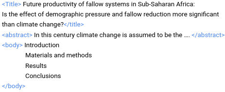
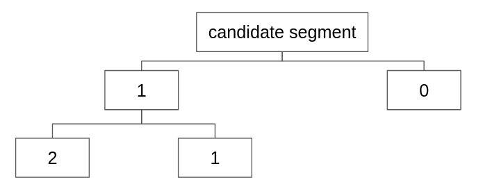

Metrics
The project was focus in not lose information, so we were intersted in a good precision for class 0 because this was the one we were not interested at all, and a good recall for class 1 and class 2.

This project focuses on extracting valuable information related to Land Use and Land Cover in Africa from large volumes of scientific documents using Natural Language Processing (NLP) techniques. The goal is to extract candidates for relevant segments, classify them, and finally extract specific entities and analyze them. You can find the report here and the code here.
The first step is to transform the documents into text format. In our case, we are interested in the title, abstract, and body. To reduce noise, we use GROBID, a pretrained model, to extract the text in a hierarchical way, converting it into an XML format.
For this segmentation, we utilized the Regular Expression library in Python (Regex), using sequences of periods followed by spaces as delimiters.
The dataset was manual labeled into 3 clases. To classify the unlabel dataset we used a schema by rounds and we try several models like SVM/Bag of Words and BERT.
The project was focus in not lose information, so we were intersted in a good precision for class 0 because this was the one we were not interested at all, and a good recall for class 1 and class 2.
We used **Information Extraction (IE)** to convert unstructured text into a structured format for better analysis. A key technique is **Named Entity Recognition (NER)**, which identifies and categorizes important entities related to LULC dynamics, such as measurements, directions, dates, and locations. For NER implementation, we used the **SpaCy NLP library**, along with **Regex** and **Entity Ruler**, to refine the extraction process and capture both quantitative and qualitative data essential for analyzing LULC changes.